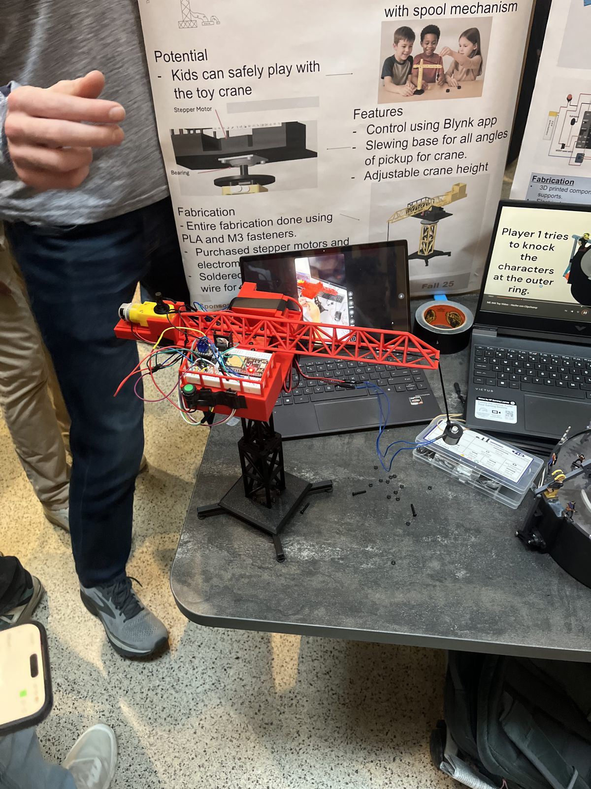
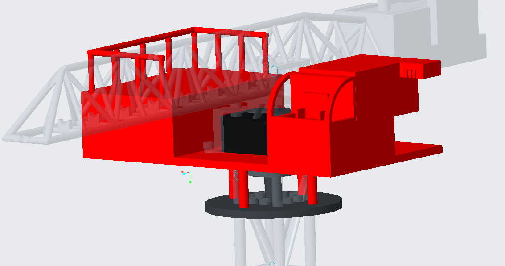
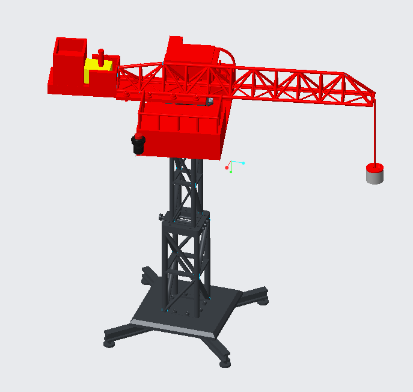
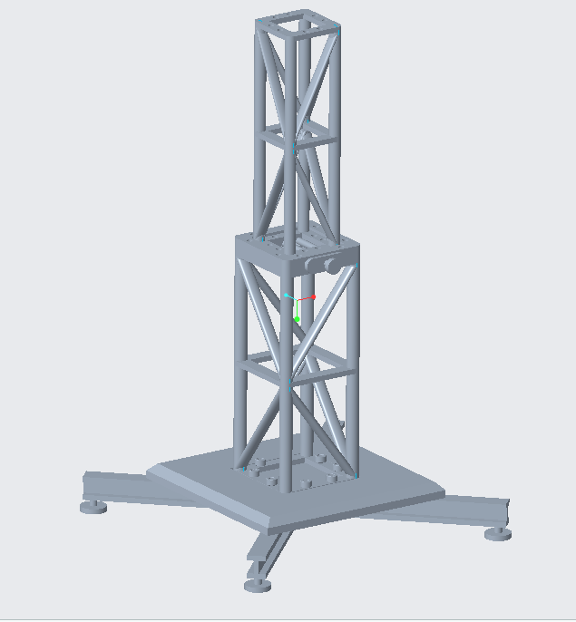
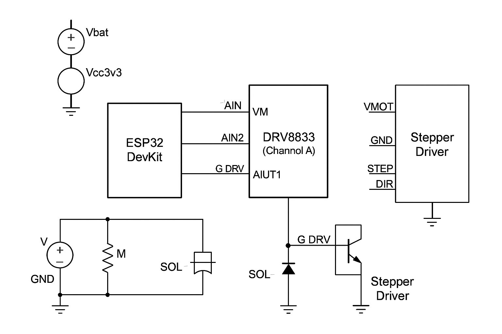
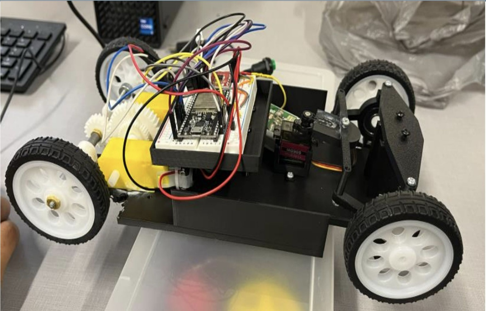

“The Lifting Line”: a toy tower crane that spins 360°, drops an electromagnet on a spool, and runs from a phone. Built with a team of four for ME 444 at Purdue.


The brief was to design and build a working action toy that fits in a 10″ × 10″ box for under $70. We’re all car people, so we took inspiration from the magnet cranes in demolition yards that pick cars up, and from the tower cranes all over West Lafayette. The result is a crane you drive from your phone: spin the arm, drop the magnet, grab something metal, and put it somewhere else. It’s aimed at kids around five to eight.
Real cranes are much taller than they are wide, which doesn’t fit in a 10-inch box. So we made the tower telescope: two sections of different diameters, with the top one sliding inside the bottom, so it stores at 10 inches and extends to about 15 for play.
A bearing on top of the tower carries the cab, and a stepper motor turns it through a rigid shaft for full 360° rotation at around 20 rpm. A DC motor drives a spool that lowers and raises an electromagnet to grab and drop metal objects, all controlled from a phone. We modeled it all in Creo and 3D printed every part in PLA, splitting big parts into smaller bolted pieces so one bad print didn’t mean reprinting everything.
I owned all of the electronics integration: getting the ESP32, the TMC2209 stepper driver, the DRV8833 motor driver and the electromagnet working together, packaging it all inside the cab, and wiring it to the Blynk app so the whole crane runs from a phone.
I also designed the payload end at the top of the crane: the spool and hoist that raise and lower the electromagnet, and the holder that fastens the magnet to the line, sized so it could reliably pick up and drop the load.
We went through three iterations of the assembly. The slewing connector didn’t fit because the motor shaft was thicker than its spec sheet said, and print failures broke a few final parts. We added tolerance to every press-fit part and moved all printing to one printer (a Bambu A1), which made the final iteration accurate.
During final integration, we burnt out our second motor driver. We rewired the spool motor and electromagnet to physical switches and kept the stepper on the phone app. That turned out to save the demo: the venue Wi-Fi was unreliable, and the switches kept the crane working for everyone who came by.



